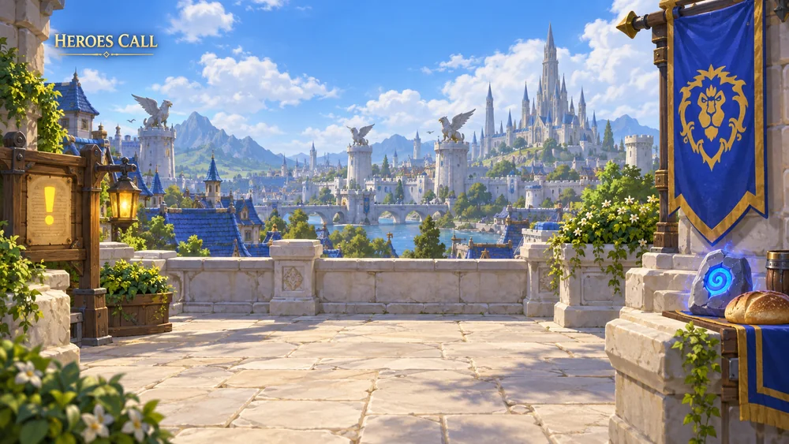

A home for the video podcast
Custom Warcraft-inspired sets, two-host screen layouts, segment backgrounds, and intermission scenes that feel like part of the same show.
I bring your on-air personality to the screen—through worlds, characters, and a little goblin mischief.
Explore the workTwo short green goblin versions of the hosts dance side by side, with bent-knee bounces and coordinated arm movements inspired by the male goblin dance emote. No spoken dialogue.
The video could not load. Open Dance 2 directly.
Press play. Swipe between the two dances. Download this video ↓
A world of possibilities for your next chapter.
Ten parts of the show. Eight backgrounds for each. Choose a section to see its worlds.

80 SCENES · 10 COLLECTIONSBeyond the 80 backgrounds: character studies, studio concepts, host layouts, and early experiments. Take a look around.
Your hosts, with a goblin twist. Pick the cute treatment or the classic look, then find a reaction for the moment.
Transparent PNGs for overlays, chats, and social posts. Captions are playful show-inspired concepts.
Their welcome. Their tagline. A few goblin threats. Six animated text overlays drawn from the show, ready to make an entrance.
I can build a visual world around the things that make your show yours: the banter, the recurring bits, the characters, and the community.
Custom Warcraft-inspired sets, two-host screen layouts, segment backgrounds, and intermission scenes that feel like part of the same show.
Goblin host illustrations, expressive sticker collections, reaction graphics, and visual jokes built around your on-air chemistry.
Character animations, short dance clips, segment bumpers, and playful transitions that give your video episodes their own rhythm.
Episode artwork, thumbnails, quote graphics, and short promotional edits—adapted for the places your listeners watch, scroll, and share.
Start with a favorite scene, a sticker style, or a little goblin dancing.